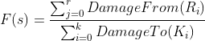

This software allows to save, load and tune one or more set of built competitive pokemons, intended to be used for team bulding. It is, however, primarily an automatic spread optimizer.
A pokèmon spread can be evaluated by measuring the amount of damage its user deliver and take. The more damage the pokemon inflicts and the lesser it takes to/from a set of counters, the better the spread is. This software uses an evaluation function that include these two factors (and also speed) to guess if a spread is better or worse than another. Once it can efficiently estimate the goodness of a spread, it can also easily select the best one by solving an optimization problem.
Given a subject pokemon P to be evaluated and two sets of test enemies selected by the user:
K1, K2 ... Kk: enemies that P want to KO.
R1, R2 ... Rr: enemies that P want to resist.
Then a good spread s is a spread that minimize the following function:

The two subroutines DamageTo and DamageFrom are the same that the calculator uses in normal circumstances, hence they essentially depend on the EV Spread and on Nature.
The user can specify the maximum tolerated damage for P from each enemy Ri, as well as the minimum damage that P must inflict to each Ki. In order to achieve these goals a certain quantity of EVs in attack or defence must be provided, thus reducing the room for maneuver. These types of user's requirements are called constraints, since they impose a limit to the number of possible spreads. An example of constraint is:
DamageTo(Charizard) >= 50%
If we assume that P is Blastoise, this essentially is saying that Blastoise must at least 2HKO Charizard. It's possible that our giant turtle will need a bunch of EVs in Special Attack to do so: this quantity is fixed and reserved to enforce this constraint.
The program lets the user choose between two strategies:
COBYLA, the fast one: this method uses constrained optimization theory to deliver an accurate solution almost instantly. Below you can find further details on this algorithm, as well as some experimental results on its accuracy and its rate of failure. In short, this is the most advisable method: it's fast and finds a solution that is almost 95% as good as the optimal one.
Full Search, the optimal one: this strategy simply tries all the possible spreads (7884240 combinations!) and then selects the best one. It is much slower than the other method, so you will have to wait some time, but it guarantees that the final solution is the optimal one. If this method is chosen, it's advisable to manually choose a Nature before running it to drastically reduce the time needed.
Cobyla stands for Constrained Optimization By Linear Approximation and was invented by Michael J. D. Powell. It's a well-known and versatile iterative method included in many problem solvers for its ability to work with black-box functions. The mathematical function that maps the EVs to the actual percentage damage is a very complex one and calculating the derivative in order to find the minimum point is not an easy task. To say it crudely, with Cobyla we iteratively proceed towards the optimal solution by solving many smaller problems that allow us to somewhat approximate the unknown function. For detailed information, you can consult the original publication.
We have selected 3 very different subject pokemon and, for each one of them, 2 sets of very different constraints. For each subject and for each set of constraints, then, 6 increasing speed requirements have been forced. All these 36 situation has been resolved both with Cobyla and Full Search. The experiment has been repeated two times, for a total of 72 different measures. In the figure above you can see the results in the form of three quality parameters:
Optimality: The most important parameter is optimality. Optimality essentially tells how much is good the found solution in proportion to the very optimal one. The value here is essentially F(soptimal)/F(sfound). Full Search always finds the best one, so it's optimality is 100%. Cobyla turns to be very good, with an optimality of 94.63 and an average standard deviation of 3.3 only, making Full Search absolutely not worth the time it takes.
Recognized Impossible Cases: This is the ability of being aware that the user asked for some impossible requirements, such as asking a Pikachu to OHKO Tyranitar with Tackle. Here Cobyla often misinterprets, thinking it just failed to find a solution even if it was indeed impossible (oh poor thing!). It recognized only 8 out of 18 impossible cases (44%), whereas Full Search obviously found them all (100%).
Solution Not Found: Full Search never fails: if there is a legal spread distribution that permits to enforce all the user's constraints it will certainly find it. Cobyla, conversely, may be not. This, however, rarely happens: in 54 possible cases Cobyla failed only 2 times (3.7%).